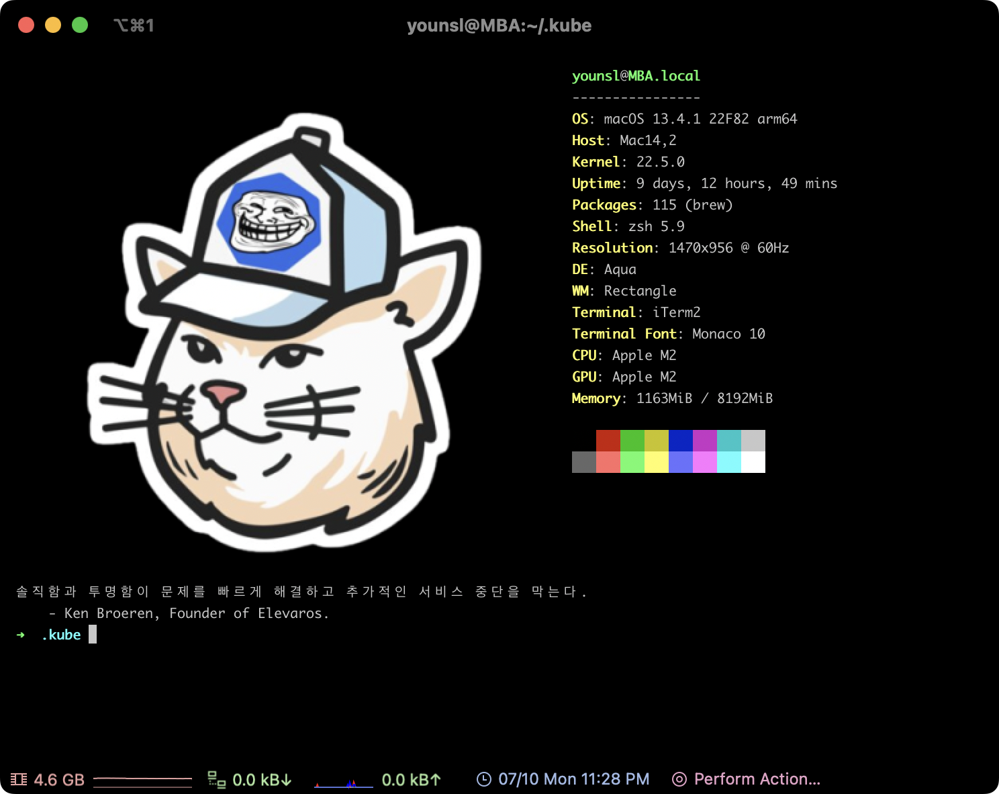
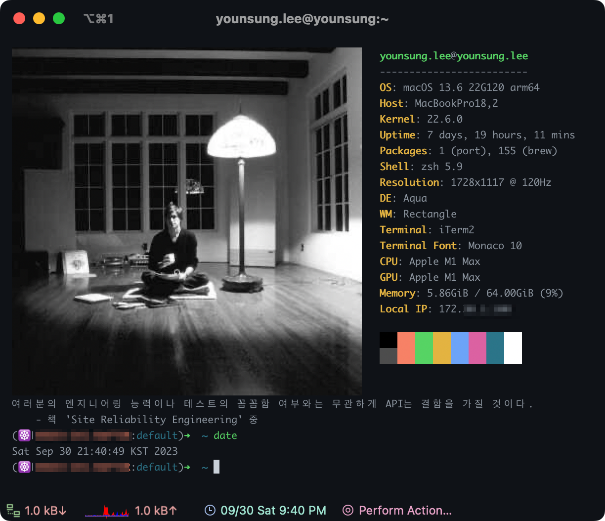

zsh 플러그인 설치
개요
패키지 관리자인 Homebrew를 이용해 autojump 플러그인과 neofetch를 설치하고 적용하는 방법을 설명합니다.

환경
- Hardware : MacBook Pro (13", M1, 2020)
- OS : macOS Monterey 12.0.1
- Terminal : iTerm2 + zsh with oh-my-zsh
- 패키지 관리자 : Homebrew 3.3.2
- 설치대상
- autojump 22.5.3
- neofetch 7.1.0
준비사항
로컬 환경
- 로컬 환경에 macOS 패키지 관리자인 Homebrew가 설치되어 있어야 합니다.
- 로컬 환경에 터미널 프로그램인 iTerm2 가 설치되어 있어야 합니다.
유용한 터미널 플러그인들
autojump
autojump는 내가 이전에 이동했던 경로를 기억해놓았다가 해당 경로로 단번에 이동(Jump) 할 수 있게 해주는 기능의 플러그인입니다.
(1) brew 설치 목록 확인
brew로 설치한 모든 패키지 목록을 확인합니다.
$ brew list
==> Formulae
bat libevent neovim
bdw-gc libffi nettle
ca-certificates libidn2 openssl@1.1
cask libnghttp2 p11-kit
coreutils libtasn1 pcre
emacs libtermkey pkg-config
fzf libtool readline
gettext libunistring tree-sitter
gmp libuv unbound
gnutls luajit-openresty unibilium
guile luv zsh
hugo m4 zsh-completions
jansson msgpack
kubernetes-cli ncurses
==> Casks
docker iterm2
autojump라는 이름의 소프트웨어는 확인되지 않습니다.
(2) 설치
brew를 사용해서 autojump 패키지를 설치합니다.
$ brew install autojump
...
==> /opt/homebrew/Cellar/python@3.10/3.10.0_2/bin/python3 -m pip install -v --no-deps --no-index --upgrade --isolated --target=/opt/homebrew/lib/python3.10/site-packages /opt/hom
🍺 /opt/homebrew/Cellar/python@3.10/3.10.0_2: 3,135 files, 57.6MB
==> Installing autojump
==> Pouring autojump--22.5.3_3.arm64_monterey.bottle.tar.gz
==> Caveats
Add the following line to your ~/.bash_profile or ~/.zshrc file:
[ -f /opt/homebrew/etc/profile.d/autojump.sh ] && . /opt/homebrew/etc/profile.d/autojump.sh
If you use the Fish shell then add the following line to your ~/.config/fish/config.fish:
[ -f /opt/homebrew/share/autojump/autojump.fish ]; and source /opt/homebrew/share/autojump/autojump.fish
Restart your terminal for the settings to take effect.
zsh completions have been installed to:
/opt/homebrew/share/zsh/site-functions
==> Summary
🍺 /opt/homebrew/Cellar/autojump/22.5.3_3: 20 files, 170.7KB
==> Caveats
==> autojump
Add the following line to your ~/.bash_profile or ~/.zshrc file:
[ -f /opt/homebrew/etc/profile.d/autojump.sh ] && . /opt/homebrew/etc/profile.d/autojump.sh
If you use the Fish shell then add the following line to your ~/.config/fish/config.fish:
[ -f /opt/homebrew/share/autojump/autojump.fish ]; and source /opt/homebrew/share/autojump/autojump.fish
Restart your terminal for the settings to take effect.
zsh completions have been installed to:
/opt/homebrew/share/zsh/site-functions
현재 brew로 설치한 패키지 목록을 다시 확인합니다.
$ brew list 23:12:50
==> Formulae
autojump fzf jansson libtermkey mpdecimal p11-kit tree-sitter
...
설치목록에 autojump가 추가된 걸 확인할 수 있습니다.
(3) 플러그인 추가
현재 zsh 설정파일을 확인합니다.
$ cat ~/.zshrc
...
plugins=(
git
zsh-syntax-highlighting
zsh-autosuggestions
)
사용할 플러그인 목록은 plugins=() 안에 선언하면 됩니다.
plugins 아래에 autojump 플러그인을 사용하도록 추가합니다.
$ vi ~/.zshrc
...
plugins=(
git
zsh-syntax-highlighting
zsh-autosuggestions
autojump # add this line
)
vi 에디터에서 변경사항을 저장합니다.
(4) 적용
$ source ~/.zshrc
zsh 설정파일의 변경사항을 즉시 적용한다.
(5) 동작 테스트
$ cd /Users/ive/githubrepos/blog/content/blog
$ cd /
autojump 테스트를 위해 각자 환경에서 깊숙한 경로까지 한번 방문한 후 최상단 디렉토리인 root directory(/)로 이동합니다.
j <점프할 디렉토리명> 명령어를 입력해서 autojump를 사용할 수 있습니다.
$ pwd # before run `j` command
/
$ j blog
/Users/ive/githubrepos/blog/content/blog
$ pwd # jumped
/Users/ive/githubrepos/blog/content/blog
여러 디렉토리 진입을 건너뛰고 root directory(/)에서 blog 레포지터리로 바로 이동했습니다.
neofetch
neofetch는 터미널 창에서 컴퓨터와 OS에 대한 유용한 정보를 제공해주는 툴입니다.
(1) brew 설치 목록 확인
brew로 설치한 모든 패키지 목록을 확인합니다.
$ brew list
==> Formulae
bat libevent neovim
bdw-gc libffi nettle
ca-certificates libidn2 openssl@1.1
cask libnghttp2 p11-kit
coreutils libtasn1 pcre
emacs libtermkey pkg-config
fzf libtool readline
gettext libunistring tree-sitter
gmp libuv unbound
gnutls luajit-openresty unibilium
guile luv zsh
hugo m4 zsh-completions
jansson msgpack
kubernetes-cli ncurses
==> Casks
docker iterm2
목록을 보면 neofetch는 아직 없으므로 설치가 필요합니다.
(2) brew 검색
brew에서 제공하는 패키지 목록에서 neofetch를 검색합니다.
$ brew search neofetch
==> Formulae
neofetch onefetch
검색 결과에 neofetch가 있습니다.
(3) neofetch 설치
brew를 사용해서 neofetch를 설치합니다.
$ brew install neofetch
==> Downloading https://ghcr.io/v2/homebrew/core/screenresolution/manifests/1.6
######################################################################## 100.0%
==> Downloading https://ghcr.io/v2/homebrew/core/screenresolution/blobs/sha256:3
==> Downloading from https://pkg-containers.githubusercontent.com/ghcr1/blobs/sh
######################################################################## 100.0%
==> Downloading https://ghcr.io/v2/homebrew/core/neofetch/manifests/7.1.0-2
######################################################################## 100.0%
==> Downloading https://ghcr.io/v2/homebrew/core/neofetch/blobs/sha256:78eb3e99d
==> Downloading from https://pkg-containers.githubusercontent.com/ghcr1/blobs/sh
######################################################################## 100.0%
==> Installing dependencies for neofetch: screenresolution
==> Installing neofetch dependency: screenresolution
==> Pouring screenresolution--1.6.arm64_monterey.bottle.tar.gz
🍺 /opt/homebrew/Cellar/screenresolution/1.6: 5 files, 57.7KB
==> Installing neofetch
==> Pouring neofetch--7.1.0.all.bottle.2.tar.gz
🍺 /opt/homebrew/Cellar/neofetch/7.1.0: 6 files, 350.6KB
최신버전의 neofetch v7.1.0이 설치 완료되었습니다.
(4) 적용
zsh 설정파일을 엽니다.
zsh이 실행될 때 마지막에 neofetch 명령어를 실행하도록 마지막 라인에 neofetch를 추가합니다.
$ vi ~/.zshrc
...
export PATH=/opt/homebrew/bin:/Library/Frameworks/Python.framework/Versions/3.9/bin:/usr/local/bin:/usr/bin:/bin:/usr/sbin:/sbin
neofetch # add this line
이제 iTerm2를 실행시키면 zsh 설정파일을 읽고, 마지막 라인에서 neofetch가 실행된다.
(5) 결과확인
새 터미널창이 열릴 때마다 neofetch 명령어가 실행되어 디테일한 하드웨어 스펙, OS 정보를 표출해준다.
좌측에 나오는 ASCII 그림은 원하는 이미지로 설정이 가능하다.
기본값은 각 운영체제의 로고이다. MacBook의 경우 기본 값으로 Apple 로고가 출력됩니다.
더 나아가서
neofetch 커스텀 이미지
neofetch에서 자신이 원하는 이미지를 넣고 싶다면 neofetch로 터미널 꾸미기 페이지를 참고해서 설정할 수 있습니다.
랜덤 명언 조합하기
제 경우 neofetch 하단에 명언이 나오도록 fortune 패키지를 조합해서 사용하고 있습니다.

macOS 패키지 관리자인 brew를 사용해서 fortune을 설치합니다.
brew install fortune
로컬 환경에 fortune 명령어가 추가됩니다.
$ which fortune && fortune -v
/opt/homebrew/bin/fortune
fortune-mod version 9708
neofetch와 fortune을 조합한 zsh 설정파일 예시입니다.
$ vi ~/.zshrc
...
neofetch
fortune ~/.config/fortune/
zsh에 설정한 것과 동일하게, ~/.config/fortune 디렉토리 안에 출력할 명언 파일들을 작성해서 미리 한 곳에 모아 놓습니다.
제 사용 사례로는 책이나 미디어에서 인상깊게 본 구절과 유명 개발자들의 명언을 .fortune 파일에 모두 기록해두고, 터미널을 열 때마다 습관적으로 읽을 수 있게 계속 노출시키고 있습니다.
아래와 같이 각 카테고리별로 .fortune 파일을 분류합니다.
$ ls
bootstrap.sh crypto.fortune general.fortune programming.fortune security.fortune strfile.sh
carrer.fortune devops.fortune philosophy.fortune science.fortune sre.fortune
명언을 모아놓은 텍스트 파일을 작성했으면 이제 ~/.config/fortune/ 디렉토리 안에 strfile.sh 스크립트를 생성합니다.
$ cat << EOF > ~/.config/fortune/strfile.sh
#!/bin/bash
# 현재 디렉토리에서 .fortune 파일 목록을 가져옴
fortune_files=$(find . -maxdepth 1 -type f -name "*.fortune")
# 각 .fortune 파일에 대해 strfile 실행
for fortune_file in $fortune_files; do
strfile "$fortune_file"
done
EOF
fortune은 일반 텍스트 파일만은 읽지 못하므로, 인덱스 정보가 담긴 데이터 파일 .dat로 변환 처리해주는 스크립트입니다.
이 때 사용되는 strfile 명령어는 fortune과 같이 사용되며, 텍스트 파일을 더 쉽게 검색하고 무작위로 텍스트를 선택하는 데 도움을 줍니다. strfile을 실행하면 텍스트 파일을 읽어 들이고 인덱스가 담긴 데이터 파일 .dat을 생성합니다. 이 인덱스 데이터 파일은 fortune이 출력할 명언을 검색할 때 빠른 액세스를 가능하게 합니다.
명언이 있는 경로에서 strfile.sh을 실행합니다.
sh strfile.sh
"./programming.fortune.dat" created
There were 26 strings
Longest string: 366 bytes
Shortest string: 59 bytes
...
"./science.fortune.dat" created
There were 4 strings
Longest string: 169 bytes
Shortest string: 80 bytes
스크립트는 각각의 .fortune 파일을 읽어서 인덱스 정보가 담긴 데이터 파일인 .dat를 생성합니다.
스크립트를 실행한 후 결과는 다음과 같습니다.
$ ls ~/.config/fortune/
bootstrap.sh crypto.fortune.dat general.fortune.dat programming.fortune.dat security.fortune.dat
carrer.fortune devops.fortune philosophy.fortune science.fortune sre.fortune
carrer.fortune.dat devops.fortune.dat philosophy.fortune.dat science.fortune.dat sre.fortune.dat
crypto.fortune general.fortune programming.fortune security.fortune strfile.sh
각 분야별로 모아놓은 .fortune 파일에 매핑되는 .dat가 생성된 걸 확인할 수 있습니다.
주의사항
fortune명령어는.dat파일 그 자체로는 명언 내용에 대한 완전한 정보를 읽지 못합니다. 디렉토리 안에.fortune과.dat파일 둘다 존재해야fortune이 정상적으로 명언 데이터를 읽을 수 있습니다.
이제 iTerm2를 재실행하거나 zsh 명령어로 쉘을 재시작하면, fortune은 ~/.config/fortune/에 위치한 모든 명언들 중 하나를 랜덤하게 출력합니다.
마치며
개발하는 대부분의 시간은 끝없는 고민으로 이어진 시간과 정신의 방입니다.
이런 식으로 아기자기한 터미널 환경을 만들면 고된 프로그래밍도 그나마 덜 힘들게 느껴지고 종종 재밌게 다가올 때가 있으므로 공들여서 구축해놓도록 합니다.
이렇게 개발환경 세팅 하다보면 현재 환경을 개선하는 일에 빠져들 때가 있습니다. 마치 야크 털 깎기Yak Shaving처럼요. 하지만 야크 털 깎기는 재밌습니다.